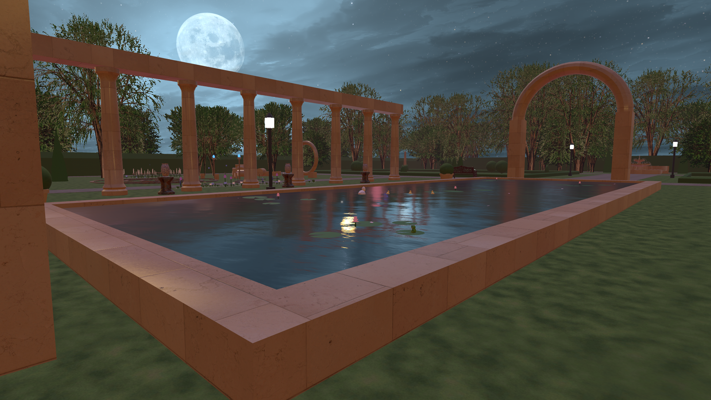
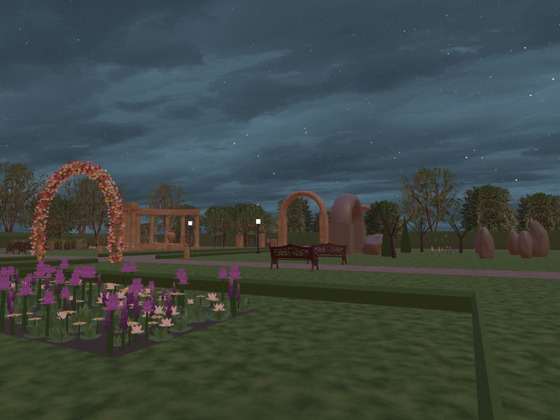
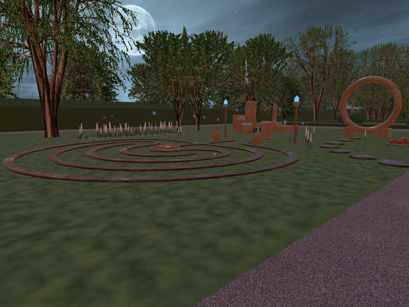
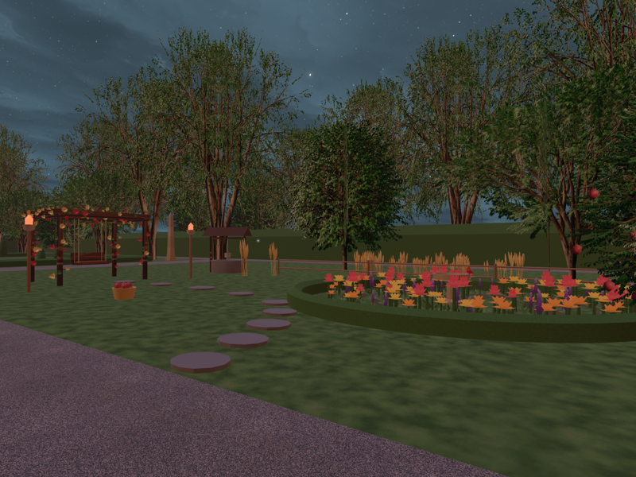
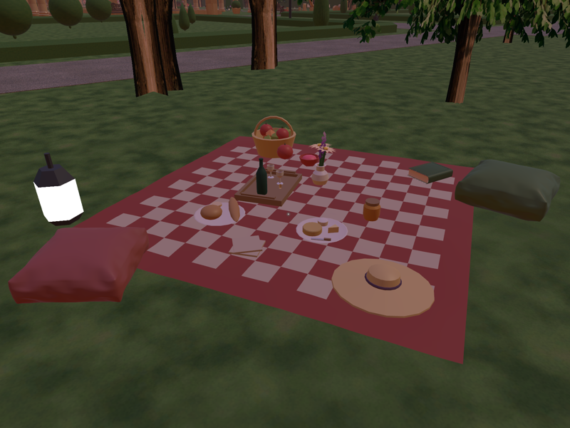
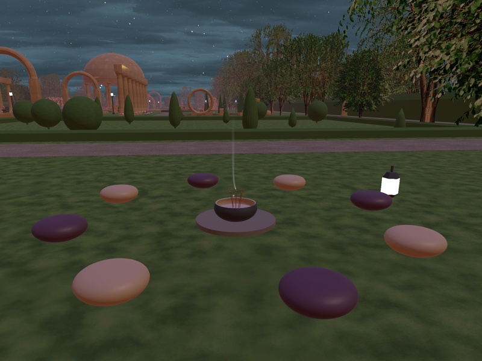
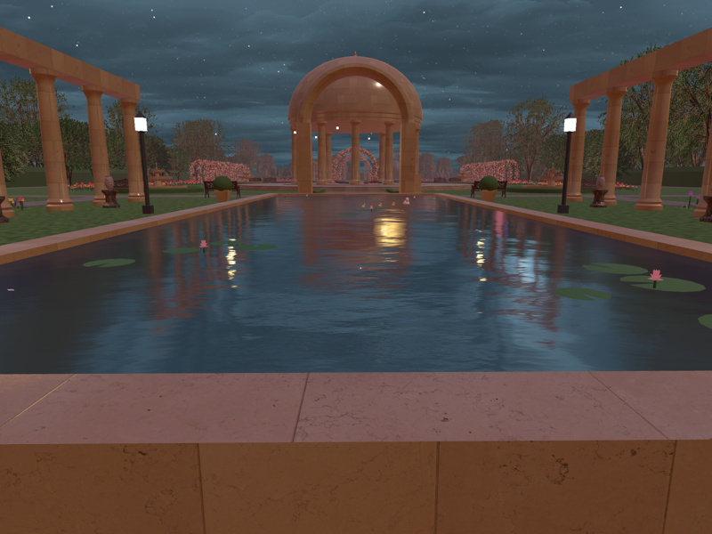

Les Jardins de Perséphone
2026

A 100 × 250 metre French formal garden built as a VRChat world, structured as a retelling of the Persephone myth. Six themed sections line a central axis, with a spring garden to the west and an underworld to the east, so visitors move through the story as they explore the space.
The garden was built procedurally in Blender using Claude and the Blender MCP, at a much larger scale than my other worlds. Every builder lives in a shared Python library, and each area is an idempotent function that rebuilds itself from constants, keeping the whole scene regenerable rather than accumulating manual edits. Trees were grown with the Sapling Tree Gen add-on and ortho-baked into crossed-quad impostors, cutting the raw scene from 33 million triangles to about 2.5 million while holding the level of detail. Flower beds are geometry-node scatters with per-section colour schemes.
Getting a scene this size into Unity required a custom export pipeline in the same library. It folds more than fifty flat materials into a single palette atlas, reprojects UVs in world metres, merges hundreds of objects into per-section chunks, and generates colliders and VRChat station markers. Automated repair passes fix failure modes that only appear under Unity's backface culling, such as inside-out lathe geometry and mixed-winding islands. The export ships as two FBX files, separating the large static mesh from the interactive props, so iterating on components re-imports only a few megabytes. The finished world runs at full detail on Quest.





